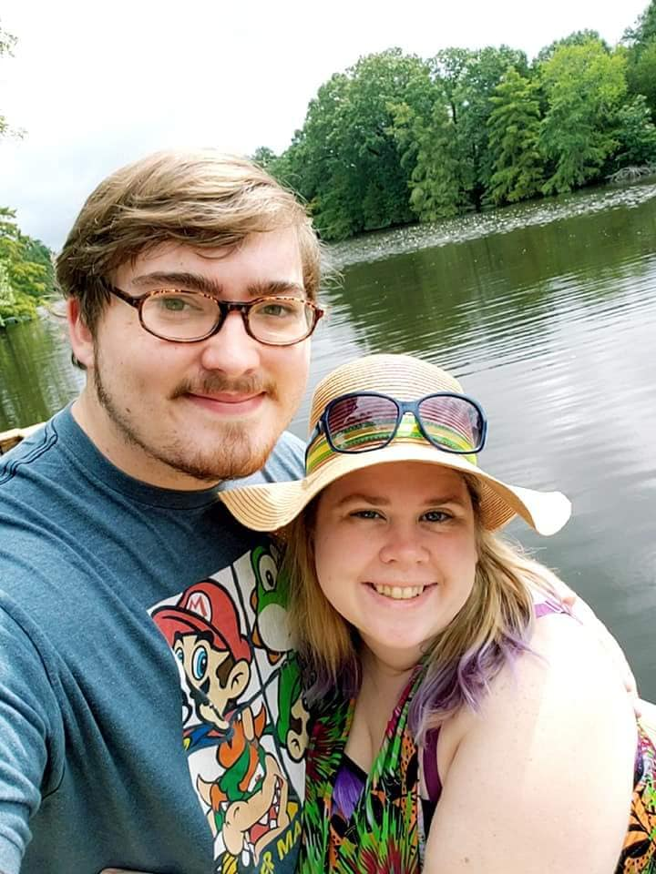

A day in the life of a programmer is a lot of problem solving with cool tools. One day your fixing some small issue that you need to finish up a school project, the next you are researching like a mad lad to find a solution for the next project.
Garrett Wagner
Cameron McDaniel
Between being married and working an internship, studying for two degrees at once can be very tiring. The good news is, I have plenty of friends, family, and faculty to keep me afloat in the sea of homework and due dates. I will be proud to call Oklahoma Christian my alma mater and will spend countless days recounting plenty of happy memories and strengthening struggles.